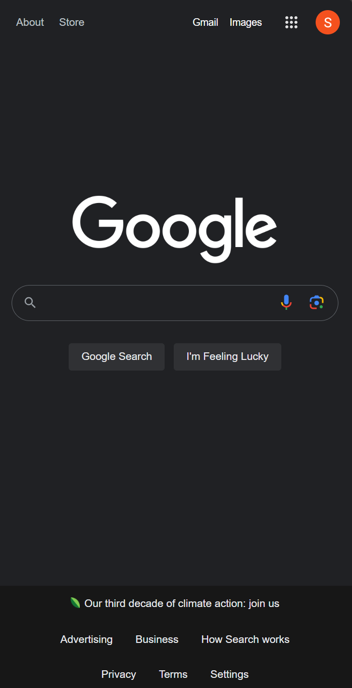
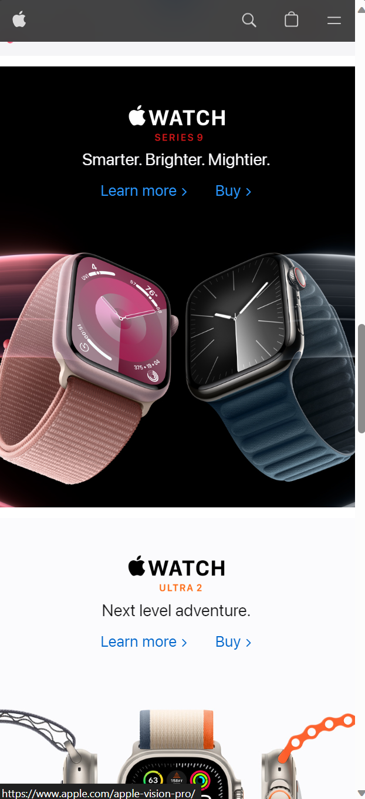
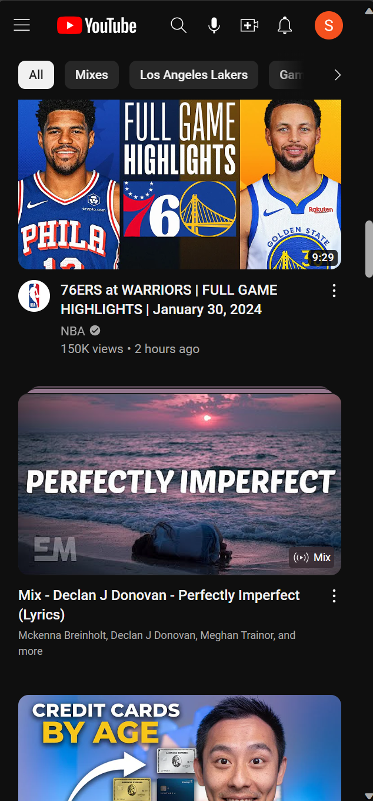

Visual Hierarchy

The purpose of Visual Hierarchy is to create a focal point in the site. The Google website is a clear example of this. The center is the focus, especially the search bar. There is plenty of white space around the center which draws the user to the center, where most of the content is located.
Rule of Thirds
Apple
Apple.com
Rule of thirds is a visual guide when it comes to creating focus and drawing the attention of the user. Imagine there is a 3 by 3 grid on the screen and the intersections of those points have a foucs. In this case, two of those points towards the apple watches which are pleasing to the eye and could draw users to look more into them.
Hick's Law
Youtube
Youtube.com
Hick's Law means that the more options or choices that are available, the more time that a person decides to make a decision, in web design terms, this allows users that visit the page to stay longer as they make a decision. Youtube has plenty of videos to choose from and watch, and they are specifically tailored for every user. This makes making a descision for the user to take longer as they decide on what to watch and may never see the other options again.